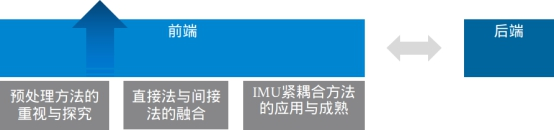
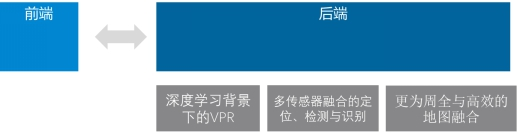

背景简述与总体方向：Life-long SLAM
在视觉SLAM中，前端负责稳定跟踪，起到里程计的作用；后端负责地图维护与误差修正，并提供重定位等功能（如下图）。此为简单概述以便后叙。
目前视觉SLAM的整体主要发展方向，根据我的理解，为Life-long SLAM，即长时间的、可不断自我更新的建图与定位，并具有抗failure的恢复机制。在此基础之上，语义化的地图表示等高级功能亦可期待。从技术路线上来讲，我认为SLAM的发展应是继承发展传统架构，并吸取近年来深度神经网络应用在图像处理中的一些成果。由于SLAM技术底层原理的完全可解析特性，我并不完全支持端对端的SLAM发展方向。
前端发展方向：高精度鲁棒前端
在IMU的帮助下，以及各种各样的前端手段变得越来越成熟的背景下，前端的里程计精度变得非常之高（两大流派代表VINS与DSO都在0.8%左右）。这样带来的直接后果与意义是，后端对前端带来的精度提升与计算量性价比似乎没那么高了，但是单纯的高精度前端在自主无人系统中的应用作用似乎总是觉得“有力使不出”，正也因此诸多优秀的前端系统的主要应用领域为XR等。然而，现有的解决方案也远称不上是完美的解决方案。SLAM系统前端现仍然存在改进空间，例如现阶段局部精度的优势大于鲁棒性，即在环境条件适合的情况下可以达到较好的精度，但实际应用中很难保证如此理想的环境。而造成这些现象的原因有复杂环境下的光照变化、实际任务中的视觉“不友好”运动（纯旋转，短时剧烈抖动与瞬间大视角变化等），视觉受环境物体遮挡等。而与之对应的，SLAM，抑或说VO领域亦发展出了相关的对策（如下图所示），并且在不断地被研究与推动。其中包括了对前端预处理的发展与探究，以对抗在光流跟踪中的不满足光照不变性假设的场景；直接法与间接法的融合发展，使得前端可以在精度与稳定性的增长上得到更为平衡的性能。更进一步地，目前IMU与视觉的紧耦合在前端体现出了令人满意的表现，然而目前算法还没有完全发掘出其全部的能力。

后端发展方向：语义建图优化, 传感器融合与层级地图融合
首先，由于上文提到的前端进步，后端在误差修正中带来的作用被弱化（但仍然存在且在大场景长时间应用中不可或缺）；但是与此同时，后端在自主无人系统中的实际对接意义慢慢显示出来：准确的前端带来了对后端速度的包容，从而允许后端从事更为复杂与高级的计算。如果说前端已经即将处于一个“一览众山小”的阶段，那么后端则还是“这山望着那山高”的状态。在传统方法仍然时不时会提出理论层面的创新时，众多深度学习加持的方案也在冲击与融合。这其中我认为最为突出的是重定位的实现、更多传感器的加入与地图维护与融合（如下图所示）。

同样是为了“更稳定更准确地进行重定位与地图修正”，这三点中的前两点是为不同的思路与路线，而第三点则是为前两点提供接口与基础的发展。具体来说，第一点我们可以藉由愈发成熟的借助深度神经网络的whole-image-descriptor生成技术实现具更为稳定的对环境的描述；亦可借助于类似于3d-deep-box等技术实现对环境的实例语义建图；第二点则是通过Lidar、GNSS、IMU、外部标签等方法进一步融合，不仅可以辅助实现在更为复杂环境下的准确定位，更可将SLAM系统与地面机器人所需要的检测与识别功能统一化，减少整体系统的计算开销。
最后，最为重要的第三点我认为是达成Life-Long SLAM的最为关键一点，即对地图的层级化管理与融合。目前SLAM系统通常只维护一个全局地图，而这样势必会随着时间的增长造成优化上的困难（无论采取什么样的incremental的实现）。而层级化的地图生成与管理可以做到地图的“随用随取，随取随改”，这样方能实现在长时间内对地图的维护以及实现自身的定位。
室内场景的机器人视觉自定位技术难点
在上一节中我以较为概括地阐述了整体视觉SLAM的发展方向，同时也是技术难点。室内机器人的视觉定位技术作为整体视觉SLAM的子集，几乎可以继承上述所有的论述。包括但不限于：
由于环境变化带来的地图变化以至于无法进行Life-long SLAM；
窗边，灯边等区域的光照变化带来的Tracking不稳定；
由于地形及任务原因进行原地快速旋转造成的tracking不稳定甚至失败；
高精度需求下的视觉定位精度不达标；
由于任务及环境原因造成的视觉受到动态物体遮挡导致定位失败，等等。
由于篇幅限制，下面仅对上述第一条进行简述：
由于环境物体变化、昼夜光线差别等原因，室内环境常常会有变化。对于SLAM来讲VO等局部里程计的功能受其影响不大，但对重定位，即地点识别的功能造成重大挑战，使得在同一区域无法进行同一任务。例如，在地下车库的同一区域，停车的多少与停车的种类会不同。这会让提前建立的视觉地图失效，从而无法反复执行某些任务，例如行进至某一停车位。
这一问题的根本造成原因在于目前大多数SLAM系统中所使用的地点识别算法的欠缺，无法对所处区域进行高层次的抽象与描述。较为经典的DBoW等算法通过构建特征点的词袋模型生成whole-image-descriptor；深度学习领域例如NetVLAD网络等通过CNN提取环境不变的全图描述。然而无论是上述何方，均没有达到对环境的真正理解与语义抽象。这不单单是由于深度学习的方法还有一定欠缺（例如稳定地从单目图像中提取物体三维位姿及标签），还有和实体抽象方法、几何位姿恢复等前置以及后置工作的欠缺有关。
目前针对这些问题，在牺牲一定的部署成本与普适性的基础上，可以通过部署外部人工标签的方法或增加其它传感器的方法一定程度上解决。例如Aruco二维码或蓝牙信标等。同时，一些尝试去真正理解当前环境并借此进行地点识别的算法也在推进，例如针对画面中的文字进行OCR并建图，达到理解场景的作用。然而，解决本问题的终极方案，仍是前文5.3中所述的，可以对场景进行完全理解的语义建图并加以层级化地图管理，方能稳定地达到地点描述与识别。
相对定位 VS 全局定位
首先，对于实际的工程问题，具体问题具体分析，应用决定方法。我认为这是首当其冲的第零法则。同样是算力受限的情况，在VR/AR等领域稳定的前端VIO会给用户带来更好的体验，小场景，外部辅助部署成本低的特点使得全局定位变得更为简单；而对于某些场景下的仓储机器人，局部定位功能甚至可以弱化至几乎没有，只靠轮速里程计积分完成。而全局定位则依靠大量的外部辅助标签引导其将货物送至正确的货架。因此，无应用限定的场景下，谈论“收益”是没有固定答案的。
然而无论是何种场景下，以“物有所值”形容VIO紧耦合的正确性，我认为答案是肯定且切合的。IMU的加入不仅使得系统客观性增加，减小了优化自由度与计算量（姿态只用优化yaw角），并且在跟踪稳定性上有了很大的增强。由于对于BA优化或光流跟踪这种非凸优化来讲，初值是敏感的，一个好的初值能够很大程度上减少优化迭代次数以及提高优化精度。这一定程度上弥补了IMU积分所带来的计算开销。并且，由于IMU预积分技术的存在，IMU在位姿图中的constrain并不会被在优化中反复计算，这也降低了其计算开销。因此VIO紧耦合所额外付出的计算资源并不大，却获得了很高的精度与稳健性提升。
视觉全局定位的多种思路改进已在前文5.3节与第3节中有所叙述，包括深度神经网络生成全图描述子、多传感器融合、OCR建图等方案，在此不再赘述。额外地，对于5.3节中所描述的语义三维位姿建图及识别的方法，在此提供一种更为详实的思路：藉由深度网络或传统方法生成物体的三维语义位姿（即三维bonding-box，由deep-3dbox等算法实现），利用SLAM框架生成语义三维地图（cube-SLAM已有部分实现）。在剔除易改变物体后，可根据位姿图生成局部地图的拓扑位置关系。综合三维物体的几何特征、传统特征以及局部地图的拓扑位置特征，可针对地点形成较为稳健的描述。